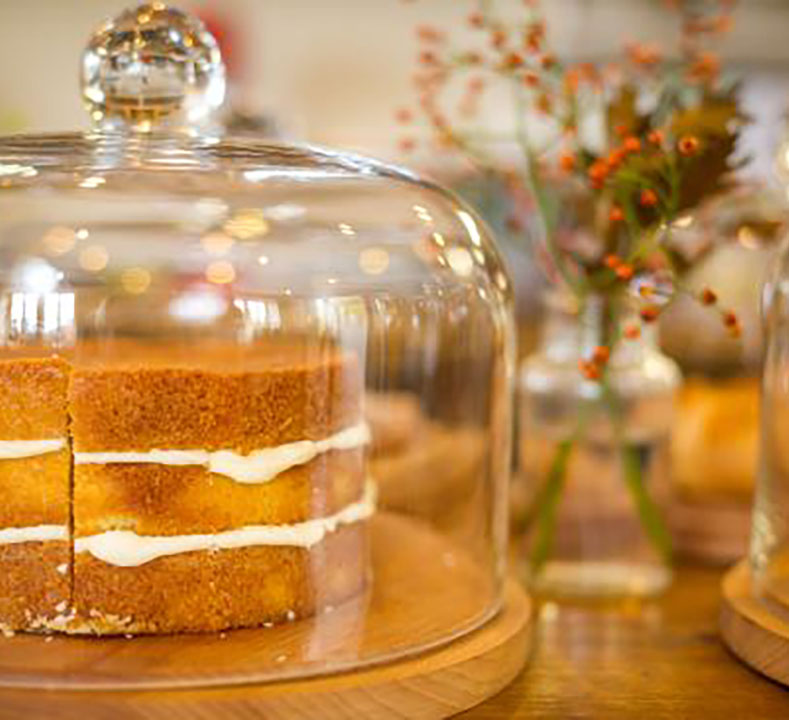

Georges Animal Farm
Home
About Us
Petting Zoo
Trails & Walks
Contact Us!
After a long day of fun and adventure why not stop at our lovely shop for a browse.
We sell local grown produce and vaaarious plants, production went up tenfold becuase of our beloved Boxer (RIP) so we have much to sell such as
Various apples
Rhubarbs
Corn
and various other types of produce.
